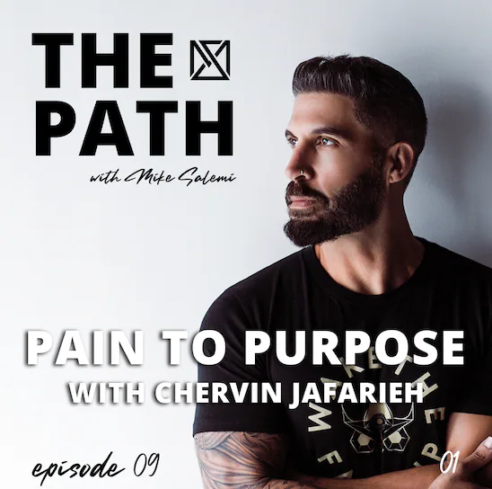

B857 · Pain to Purpose
Hi {first_name},
Chervin Jafarieh is the founder of the incredibly successful health supplement company, Cymbiotika, and host of the Wake the Fake Up Podcast. In this conversation, Chervin shares so much wisdom around topics from personal reflection and moving through challenges to what it takes to build one of the fastest growing health companies. His intentionality around his entire life is astounding to me and I know you’ll get a lot out of this conversation.
In Episode #9 of The Path Podcast, Chervin and I discuss:
 Click here to listen on Spotify. Click here to listen on Apple.
Yours in health and strength, Mike |